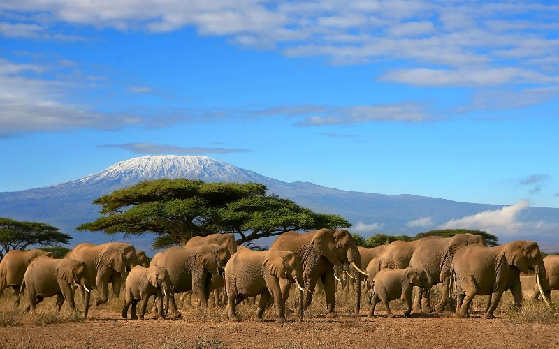
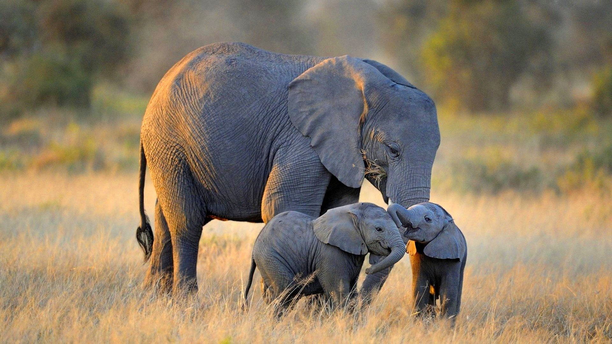
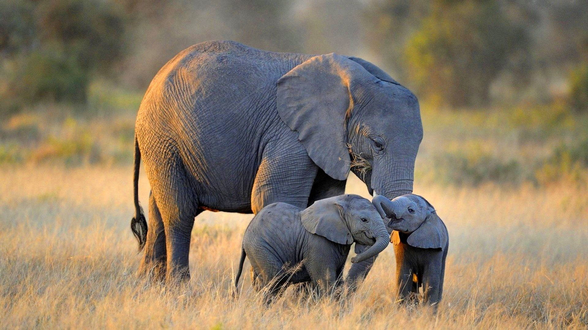
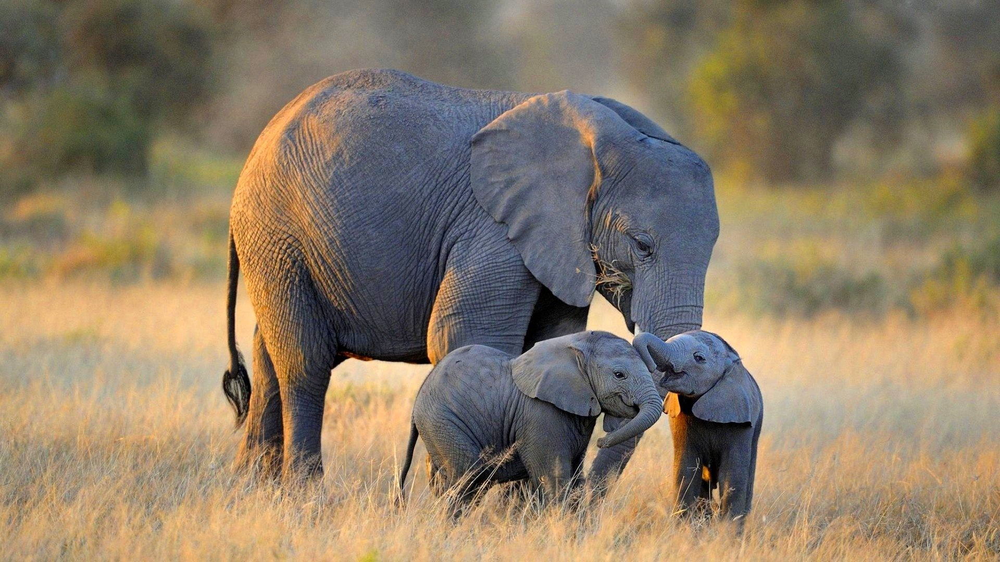

It is in this Amboseli park, more than anywhere else perhaps in the continent that you are bound to see large herds of Elephants.Maasai Mara is a Big 5 National Reserve meaning it has Lion, Leopard, Buffalo, Elephant and Black Rhino which permanently reside here. It also has Cheetahs, Serval Cats,Hyenas, many species of Antelope and resident herds of Zebra and Wildebeest which don’t migrate to Tanzania and therefore can be seen year round.



 




DAY 1: NAIROBI - AMBOSELI
Arrive JKIA, you will be met by our representative and briefed on the safari. Proceed to Amboseli National Park. The scenery on this drive is predominantly of open wide spaces characterized by a sparse settlement system mainly along the road. You would be interested to know that this was the first National Park established in Kenya. The park is strategically situated at the North West foot of Mount Kilimanjaro which is not only the highest peak in Africa but the second highest in the world. On a clear morning you will easily see the snow cup that crowns its peak from the comfort of your hotel room or while out on a game drive. Most of this park consists of a dry, ancient lakebed and fragile grasslands with patches of acacia woodland. It is in this park more than anywhere else perhaps in the continent that you are bound to see large herds of Elephants. You arrive at the camp/lodge in time for lunch. The early afternoon is spent at leisure within the lodge premises and in the evening you Depart for a game drive till dusk. Dinner and overnight at your camp/lodge.
DAY 2: AMBOSELI - NAKURU
Early morning game drive. Return to the lodge/camp for breakfast. Depart for Lake Nakuru National Park with packed lunch. The park is home to one of Kenya’s most famous picture; thousands of pink flamingos swathed together on the lake shores. The flamingos frequent the shores to feed on the Algae that abound there. The numbers have however dwindled in recent years and migrated to Lake Bogoria. That notwithstanding the park boasts of a prolific bird life with over 450 bird species having been recorded. In addition, to the African wild dog, buffalos, zebras, elands, lions among other animals, the park is a sanctuary for the white Rhino. It’s thus common to find rhinos lazing in the shadow of the acacia trees on a hot sunny afternoon. But perhaps most interesting, it is perhaps in this park more than any other in the country that visitors increase their chances of spotting the elusive leopard. In the afternoon depart for a game drive till dusk. Dinner and overnight at your camp/lodge.
DAY 3: NAKURU - MAASAI MARA
After breakfast check out and depart to Mara with a game enroute. This journey drives you further south West to what has been touted as the ultimate game viewing destination, the Maasai Mara. You arrive at the Mara in time for lunch. Your early afternoon is spent in relaxation at your camp/lodge, by the pool or in your room. In the evening you depart for a game drive till dusk. As you are bond to discover, a Mara’s sun downer is an experience to relish. Dinner and overnight at your camp/lodge.
DAY 4: MAASAI MARA
Early morning balloon safari is available as an option at USD 450 per person. The Balloon launches at 0600hrs and takes one hour. On landing you will be welcomed with a champagne bush breakfast. Full day game viewing whereby you leave the lodge after breakfast with picnic lunch. The Mara is the land of African legend: Lion are abundant throughout the park, as are the elephants, giraffes, and a variety of gazelle species and zebra. Cheetah and leopard are also regularly seen and, less commonly, rhino. The annual wildebeest migration, one of nature’s few remaining wildlife spectacles, occurs in the Mara from July to September where the big animals and their predators are to be present in abundance during the time frame of this trip. Several species of Bee-Eater, the flying rainbow that heads the list of the Mara’s birds, occur in the reserve. As well as wildlife, the Maasai Mara is also home to many members of the colorful Maasai tribe who may be seen around the borders of the park – Morans (warriors) loping across the plains, young boys herding goats, or elders grouped under a tree discussing matters of the day. Dinner and overnight at your camp/lodge.
DAY 5: MAASAI MARA - NAIROBI
After breakfast you check out and depart to Nairobi with a game enroute. Arrive in the afternoon; you will be dropped off at the airport for final departure.
END OF SAFARI